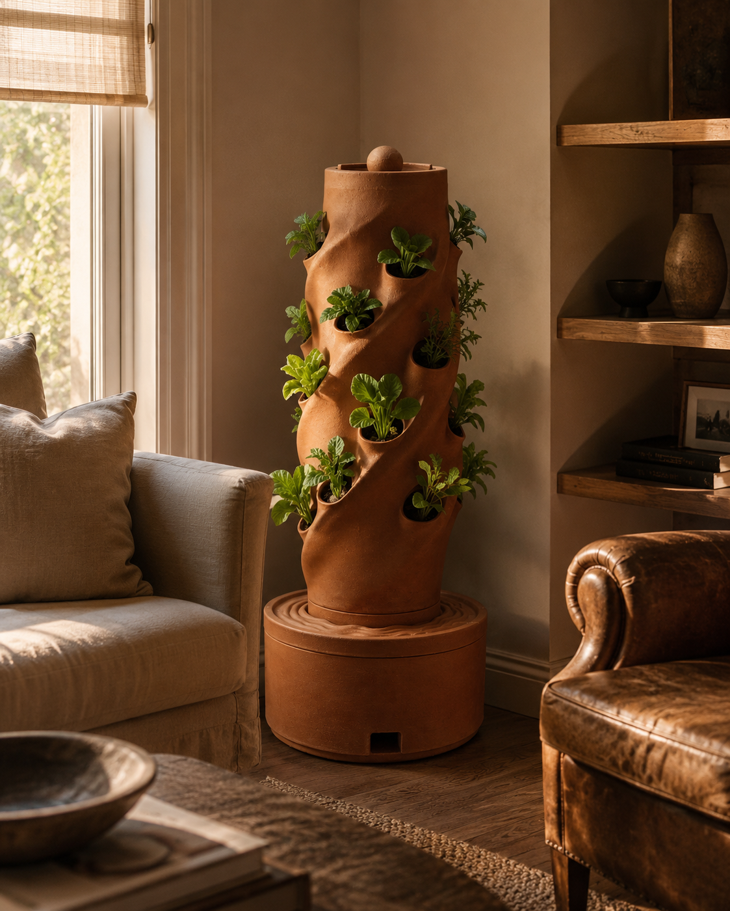
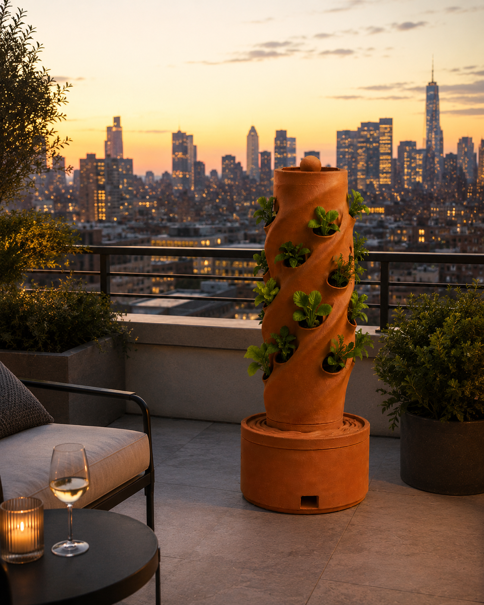
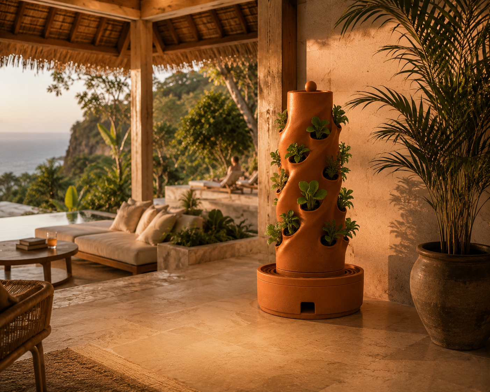
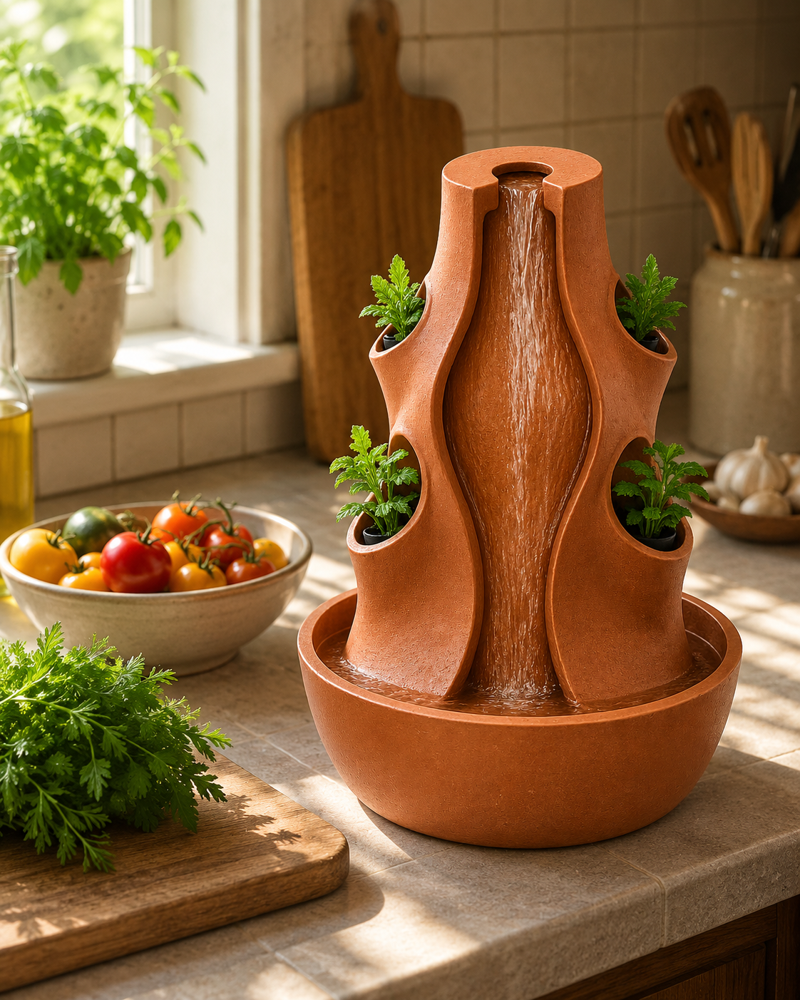
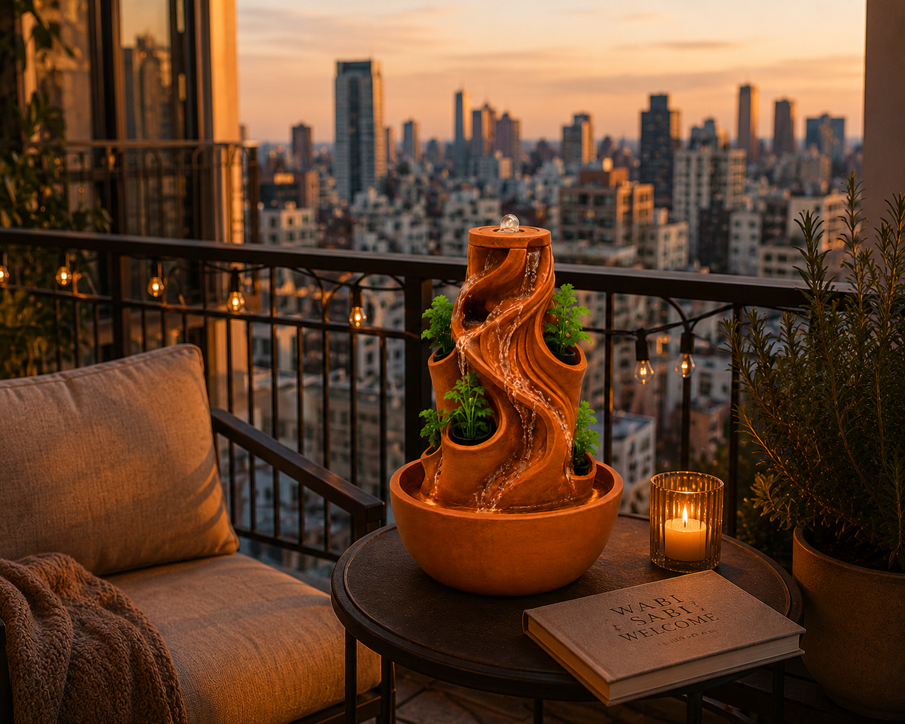
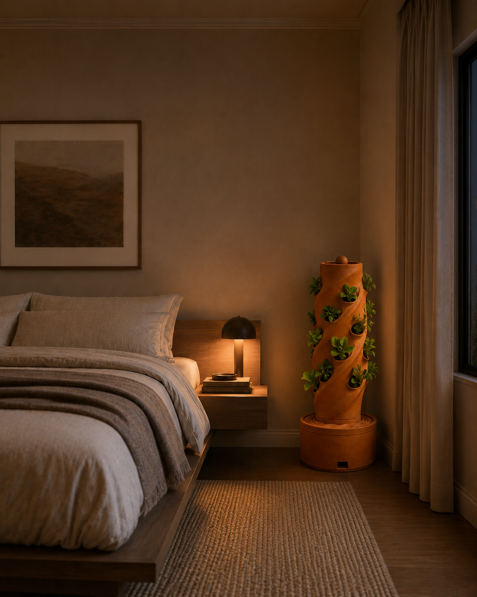
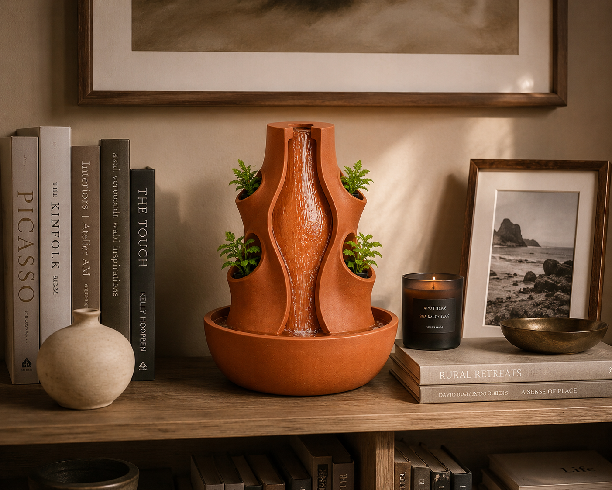

Era
The smallest tower. The biggest statement on any desk.
- Height1.5 feet
- Growing PodsCompact
- MaterialTerracotta
- PowerRequired
- Ideal ForDesk / Shelf
- StyleMinimalist
Era is the second of our 1.5-foot compact towers — minimal, refined, and built for the spaces that deserve something more intentional than a potted plant. Kitchen windowsill, office corner, studio shelf — Era fits wherever you need it. Full kit included: pump, pipe, pods, cocopeat, pH testing and maintenance kits, and seeds.

Nova
Compact powerhouse. Fresh herbs, always within reach.
- Height1.5 feet
- Growing PodsCompact
- MaterialTerracotta
- PowerRequired
- Ideal ForKitchen / Office Desk
- FootprintCountertop Ready
Nova is our compact 1.5-foot tower — perfectly sized for kitchen countertops, office desks, and bedside tables. It brings the same aeroponic technology as its larger siblings in a footprint that fits your everyday life. Kit includes pump, pipe, pods, cocopeat, pH testing kit, maintenance kit, and seeds.

Reva
Sculptural abundance. Thirty pods of pure vitality.
- Height3 feet
- Growing Pods~30 Pods
- Water Tank35 Litres
- MaterialTerracotta
- PowerRequired
- Ideal ForBalcony / Living Room
Reva shares Spira's 3-foot stature but brings a distinct sculptural silhouette. Built from the same warm terracotta and capable of sustaining ~30 pods, it thrives on balconies, in living rooms, and anywhere you want food and beauty to coexist. Complete kit included.

Spira
A living spiral. Your home, in full bloom.
- Height3 feet
- Growing Pods~30 Pods
- Water Tank35 Litres
- MaterialTerracotta
- PowerRequired
- Water SavingsUp to 95%
- Growth Speed3× faster
Spira is our signature 3-foot aeroponic tower crafted in warm terracotta. It holds approximately 30 growing pods and turns any corner of your home into a living sculpture. Each kit includes everything you need to start growing — pump, pipe, pods, cocopeat, pH testing kit, maintenance kit, and seeds.
Every tower is a complete kit.
Each Decor Aeroponic tower ships with: pump, pipe, growing pods, cocopeat, pH testing kit, maintenance kit, and seeds. Saplings can be ordered separately at an additional cost.
We are not currently selling online. To enquire about pricing and availability, please contact us.
One tower.
Every space.
From kitchen countertops to living room focal points, Decor Aeroponic towers are designed to inhabit and elevate any environment.


Living RoomSpira and Reva become the centrepiece of any living room — a living sculpture that oxygenates and nourishes your home.


OutdoorSpira and Reva thrive on sun-bathed balconies and rooftop spaces. Vertical gardens, wherever the light is best.

 Counter
Counter
Nova and Era sit perfectly on countertops. Fresh herbs always within arm's reach — zero trips to the store.

 Desk
Desk
A compact tower purifies air, reduces stress, and grows food. Your desk becomes a living, breathing workspace.


DécorDesigned first as objects — sculptural, intentional, beautiful. The growing is the bonus. The presence is the point.
Ready to grow?
We're not selling online just yet. Reach out to us directly and we'll help you find the right tower for your space.
Get In Touch